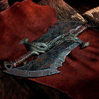

| EL DIOS GRIEGO | ||
|---|---|---|
| FAMILIA | Armar principales | ESPOSAS |
| Era hijo del titán Palas y de Estigia, y formaba parte del séquito de Zeus y Atenea siendo usado como una sola arma junto a su hermano Zelo y sus hermanas Bía y Niké. Participó en la lucha contra los gigantes (Gigantomaquia), y en la lucha contra los titanes (Titanomaquia). |
Quienes ya jugaron la aventura de Kratos y Atreus seguro conocen las dos armas icónicas de Kratos, el hacha de Leviatán y las espadas del caos. | Laufey, llamada Faye por sus seres queridos, fue una Gigante guerrera de Jötunheim. Segunda esposa de Kratos y madre de Atreus. |
|  | ||